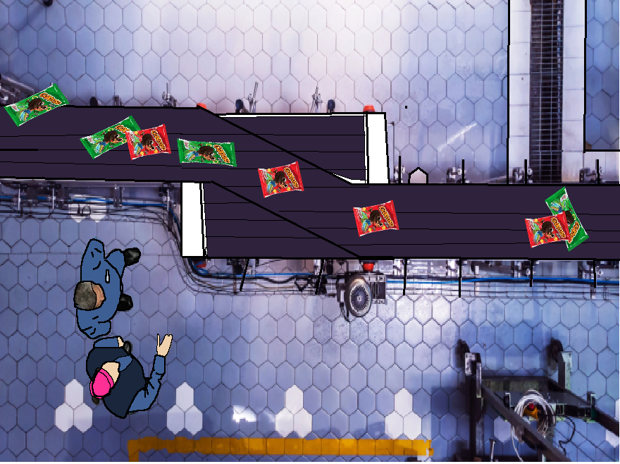
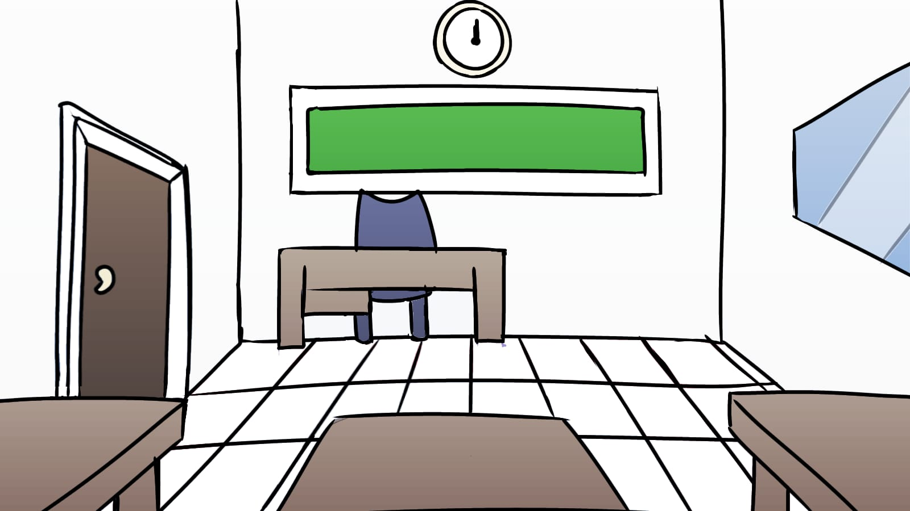
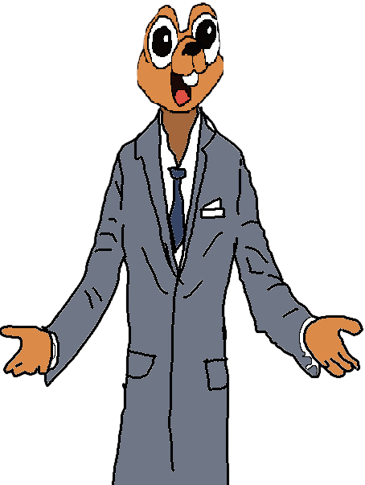

Visual Novel de Suspense Psicológico
Você é um novo aluno da Águia da Doom and Despair. No intervalo, corredores vazios, um cheiro de salgadinho barato — e um som de engrenagens vindo de baixo.
Atrás de uma porta secreta existe uma fábrica escondida que produz os Salgadinhos Goxtoso.
“E se a sua escola escondesse algo?”

Background real do jogo — fábrica vista da plataforma

Cena real do Capítulo 1 — sala de aula
Quem curte narrativa interativa e decisões que mudam a história.
Público de mistérios, teorias e histórias perturbadoras.
Consumidores de estética retrô, sites antigos e internet dos anos 2000.
Sessões curtas, sem ação nem curva de aprendizado.
Referências de gênero: Doki Doki Literature Club, Ace Attorney, analog horror — apenas como comparativo de mercado.
A escolha do Capítulo 1 altera a narração do Capítulo 2 — implementado e testado.
Interface, logo e visual inspirados em sites e blogs antigos.
16 cenários e 15 personagens desenhados para o jogo.
Músicas, efeitos e ambientes por cena, com controle de volume.
Login real, progresso salvo na nuvem por usuário.
Chefe memorável com 3 expressões — frontal, braços abertos e de costas.
itch.io / GOG — pacote completo a preço acessível.
Cada capítulo como episódio pago — menor risco para o jogador.
Bundle com capítulos futuros + bônus.
Merch do Goxtoso — o personagem é o mascote natural.
Capítulos novos são JSON — dá para escrever sem programar.
Stack própria e leve: hosting + arte são os principais gastos.
Narração + fala por personagem, com efeito de máquina de escrever e indicador de continuação.
Sprites com variações de humor, posições laterais, escala individual e cena de grupo centralizada.
Menu de decisões que bloqueia a história até a escolha — e guarda o histórico.
Música, efeitos e ambiente em canais separados, com sliders e loops por cena.
Transparência da caixa de diálogo, tema claro/escuro/automático, velocidade do texto.
Slots nomeados por usuário: capítulo, cena, escolhas e background restaurados.
| Tecnologia | Função no projeto |
|---|---|
| HTML5 | Estrutura das páginas: landing, login, dashboard e interface da VN. |
| CSS3 | Identidade visual retrô, slots de personagem, transparência e temas via CSS variables. |
| JavaScript puro | Motor da visual novel: cenas, typewriter, escolhas, personagens, áudio. |
| PHP | Backend: autenticação, sessões, CSRF, endpoints de salvamento. |
| MySQL + PDO | Usuários e saves, com prepared statements e isolamento por usuário. |
| JSON | Formato dos capítulos — narrativa separada do código do motor. |
Sem frameworks: para uma máquina de estados narrativa, JS puro deu controle total com menos complexidade.
NARRATIVA (JSON) MOTOR (JS) BACKEND (PHP) DADOS (MySQL)
┌───────────────┐ fetch ┌────────────────────┐ POST ┌──────────────────┐ PDO ┌──────────┐
│ chapter_01 │ ────────► │ VNEngine │ ───────► │ save_manager.php │ ─────► │ saves │
│ chapter_02 │ cenas │ - typewriter │ save/ │ - valida CSRF │ │ users │
│ (cenas, falas,│ │ - choices/goto │ load │ - requireAuth │ └──────────┘
│ escolhas) │ │ - if_choice │ └──────────────────┘
└───────────────┘ │ VNInterface │
│ - sprites/bg │ ▲ session + cookie PHPSESSID
│ - áudio/settings │ ▲ token CSRF validado no servidor
└────────────────────┘
Browser (HTML/CSS/JS) ◄──────────► Apache/PHP ◄──────────► MySQL
Separação clara: narrativa em JSON, apresentação em JS/CSS, persistência em PHP/MySQL.
Funcionalidades em itens pequenos: cena → sprite → áudio → save.
Fundação → motor VN → arte → áudio → capítulos → polimento, cada uma com critério de pronto.
Ao fim de cada etapa, o capítulo inteiro era percorrido e validado.
Commits por funcionalidade — histórico real de correções e features.
“Transição Cap.1→Cap.2”: comando next_chapter + preservação de escolhas entre capítulos.
Bugs de integração (CSRF, sprites, load) viraram regras de revisão.
Fetch sem cookies + SameSite Strict + token contaminado por HTML de warning PHP → credentials same-origin, SameSite Lax e limpeza do token.
setCharacter escondia todos os sprites → visibilidade passou a ser por slot, com remoção explícita.
Save restaurava cena mas não o fundo → restoreBackgroundForScene reaplica o último cenário.
loadChapter resetava o histórico → next_chapter agora preserva choicesMade.
Texto sumia em fundos claros → tema automático por luminância do background + sombras de contraste.
Integração de 16 cenários, sprites do Goxtoso e 29 áudios sem quebrar o fluxo existente.

O Salgadinho Goxtoso — chefe da fábrica secreta
Tudo abaixo é projeção — ainda não implementado.
Novos JSONs de cena — o motor já suporta capítulos adicionais.
Confronto com o Goxtoso como mecânica de turnos.
Atributos, inventário e níveis — escopo futuro separado.
Service worker + saves locais com sincronização.
Elenco da fábrica e da administração.
Capítulos como dados — escritores não precisam programar.
Maleducation — uma história que você não deveria ter encontrado.
Perguntas?
https://github.com/Murilo-web-debug/MaleducationOFC